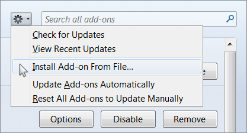

GTA is a free Google Translate Assistant extension for the Google Chrome and Mozilla Firefox browsers. The extension was specially designed to help with learning a foreign language using the Google Translate service.
With this great service you can translate any words, phrases, clauses, sentences, and text from-to a lot of languages you want. As well as you can read transliteration and even listen prononciation of it. The service also acts like a dictionary when you've typed just a single word. In this case the service shows word's definitions, translation variations and even frequency of use. That's really cool.
Let's look at the service more carefully. What's wrong with it? It's pretty nothing if you are accustomed to using your mouse. But what about if you want to use only keyboard to work with it? From this point of view it doesn't look very friendly. Let's see.

When you start typing in any text Google immediately brings a list of suggestions to you. It's very useful. But there's a problem, you can't see phonetic notation (transcription) anymore and you aren't able to access the buttons -- for example, to play pronunciation sounds -- before you've pressed Esc key to remove the suggestion list.

An another essential problem is that you can't switch languages without your mouse. But, what about if we might be able to see the transcription all the time and also have some useful keyboard shortcuts to switch languages, play pronunciation, etc? Sounds good? Well, let's go ahead.

After you has installed the GTA extension, you will be able to see the transliteration instead of the 'Translate' header and have got the following shortcuts:
Note 1: The Shift + Alt shortcut is more useful when you
need to switch between your favorite languages in the Google service, because in
this way you can also switch between keyboard input languages and start typing with
the different language immediately. Use the Ctrl + ' / ' shortcut if you just
need to switch languages in the service only.
Note 2:If you just want to switch between keyboard input languages
without switching of languages in the service, use **Esc + Alt + Shift** key
combination.
And there're even more things. The extension will focus and select text in input language area when you would be switching between languages or application windows. So you will be able to type or paste new text just at once. For some English learners the utility can show phonetic notation used for their language.
You can have this extension installed only in Developer mode currently. To do that click the "Customize and control Google Chrome" button and select "More tools -> Extensions", then enable the "Developer mode" and press the "Load unpacked extension" button. Point the folder when you have downloaded this repository.

Finally, reload the Google Translate service page.
The installation on this browser is more complicated process. Because it requires an extension to be signed and there's no official way to get around this limitation since Firefox version 48.
So you can load this extension as a temporary add-on and you're going to need to reload it every time you're starting the browser. Or you can switch off the prohibition of loading of all unsigned extensions. And this is not a good way actually. Anyway, if you want you can do it.
To do that you have to switch value xpinstall.signatures.required to false on the browser Configuration page (about:config). And you also have to create a couple of files in Firefox directory.
try {
Components.utils.import("resource://gre/modules/addons/XPIProvider.jsm",
{})
.eval("SIGNED_TYPES.clear()");
} catch(ex) {}
pref("general.config.obscure_value", 0);
pref("general.config.filename", "config.js");
After that, run the browser, open the browser Extensions page (about:addons) and use "Install Add-on From File" dialog to choose the extension file.

To make this file just zip all the stuff of this repository and rename an archive to gtassistant.xpi.
The code is pretty simple, so you can change it as you need. Maybe in the next release.
I haven't yet plans to post the utility on the Google or Mozilla stores. So, I apologize for this inconvenience.
Yes sure, just provide me with corresponding sound symbols for transcription. Feel free to email me or offer your pull request via GitHub.